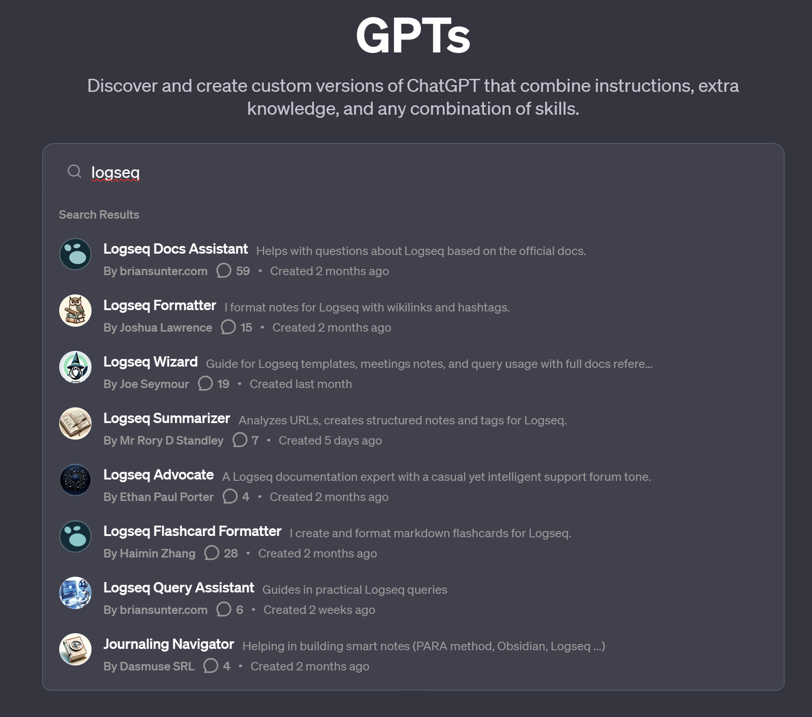

A Graph Neural Network (GNN) is a deep learning architecture that operates directly on graph-structured data by iteratively propagating and aggregating feature information across node neighbourhoods. GNNs generalise convolutional and attention mechanisms to non-Euclidean domains, learning node, edge, and graph-level representations suitable for tasks including node classification, link prediction, and graph classification across domains such as knowledge graphs, social networks, molecular modelling, and recommendation systems.
-
Semantic Classification
-
Content
A Graph Neural Network (GNN) is a neural network architecture designed to process graph-structured data by propagating and aggregating information across graph nodes and edges. GNNs learn node and edge representations by iteratively updating feature vectors based on neighbourhood structure.
-
Misc
-
llmware-ai/llmware: Providing enterprise-grade LLM-based development framework, tools, and fine-tuned models. (github.com) Large Language Models Infrastructure Knowledge Graphing
-
turbopuffer Knowledge Graphing serverless vector database
-
Using agents over Knowledge Graphing Forget RAG: Embrace agent design for a more intelligent grounded ChatGPT! | by James Nguyen | Nov, 2023 | Medium
-
Instruction-Following Conversational AI System threatens the Knowledge Graphing model with better capabilities Chat GPT 4 Turbo for Tech Leaders | Medium
-
CLI tool to deploy a GPT model from a directory of data Knowledge Graphing
-
VECTORDB open source Knowledge Graphing database
-
https://nux.ai/guides/chaining-rag-systems Knowledge Graphing
-
Instant RAG from directory agent builder for openai openai instant assistant
-
Training and fine tuning tiny 1500 line trainer for 8b Meta Llama Model Family rombodawg/test_dataset_Codellama-3-8B · Hugging Face
-
Large Language Models memory calculator LLM RAM Calculator by Ray Fernando
-
Evaluation benchmarks and leaderboards Ayumi LLM Evaluation (m8geil.de)
-
Local Multi-Agent RAG Superbot using GraphRAG, AutoGen, Ollama, and Chainlit. | by Karthik Rajan | AI Advances (gopubby.com) Knowledge Graphing Knowledge Graphing Autogen Ollama
-
Knowledge Graphing Knowledge Graphs - Build, scale, and manage user-facing Retrieval-Augmented Generation applications. (sciphi.ai) - SOTA Triples Extraction (sciphi.ai) - SciPhi/Triplex · Hugging Face
-
win4r/GraphRAG4OpenWebUI: GraphRAG4OpenWebUI integrates Microsoft’s GraphRAG technology into Open WebUI, providing a versatile information retrieval API. It combines local, global, and web searches for advanced Q&A systems and search engines. This tool simplifies graph-based retrieval integration in open web environments. (github.com) Open Webui and Pipelines Knowledge Graphing Knowledge Graphing
-
Elicit search around Knowledge Graphing - https://elicit.com/notebook/c4b29508-b134-429d-bda3-88a3b947375f - For instance, this old and simple system - https://elicit.com/notebook/c4b29508-b134-429d-bda3-88a3b947375f#17e74118b78497a92f941b07a460dd99 - gives the following DOI - https://doi.org/10.1145/2381716.2381847 - which can then go into connected papers - https://www.connectedpapers.com/ https://www.connectedpapers.com/main/995a155fee9afdfacba009c007c884a665ad3055/Visualizing-semantic-web/graph - Which immediately reveals a connection to the Semantic Web Linked Data Standard , AI-Assisted Ontology Elicitation Method , and OWL, which I am already using. -
Knowledge Graphing
-
Music Galaxy (spotifytrack.net) Music and Audio Knowledge Graphing
-
Knowledge Graphing Metaverse Ontology Multi-Layer Agentic Governance Framework Decentralised Creative Metaverse Framework Domain Expert Contact Index Tom Smoker Multi-Agent RAG Architecture Compendium
-
A New Way to Store Knowledge (breckyunits.com) Knowledge Graphing Knowledge Graphing Decentralised Web Epistemic Modality Marker
-
Knowledge Graphing GraphRAG: Unlocking LLM discovery on narrative private data - Microsoft Research Knowledge Graphing
-
topoteretes/cognee: Deterministic LLMs Outputs for AI Applications and AI Agents (github.com) Knowledge Graphing Knowledge Graphing Large Language Models also similar Microsoft Graph RAG paper looks like this could work for
-
Day planner with voice input intellisay Knowledge Graphing
-
the GPTs and Custom Assistants API from OpenAI Research Organisation now accepts huge numbers of documents and can form the basis for checking my Logseq Knowledge Graphing work against papers. RFC 2119 SHOULD Normative Keyword
-
https://github.com/yoheinakajima/MindGraph Knowledge Graphing Agents - {{twitter https://twitter.com/yoheinakajima/status/1769019899245158648}}
-
Introducing Elicit Notebooks! (youtube.com) Knowledge Graphing
-
roboflow/supervision: We write your reusable computer vision tools. 💜 (github.com) Knowledge Graphing Machine Vision
-
Sync Notion with Logseq for better Knowledge Graphing b-yp/logseq-notion-sync: Sync Logseq content to Notion (github.com)
-
Knowledge Graphing meets Large Language Models - [2401.16960] Two Heads Are Better Than One: Integrating Knowledge from Knowledge Graphs and Large Language Models for Entity Alignment (arxiv.org) Knowledge Graphing Epistemic Modality Marker - Answering Questions with Knowledge Graph Embeddings - VectorHub (superlinked.com)
-
terraphim/terraphim-ai: This is monorepo for Terraphim AI assistant, no submodules anymore (github.com) Private knowledge graph AI search which might support Knowledge Graphing - AtomicData.dev (github.com)
-
Add a tagging system to Knowledge Graphing - Status Tags: fleeting-🪴, 🌱growing, Active-Research-Projects-Registry, 🌲evergreen - Action Tags: 🌹NeedsImprovement, 🍂SunsetSoon - Context Tags: PEOPLE, learn
-
Diagrams as Code page added for the new plugin for Knowledge Graphing
-
There’s a lot of Knowledge Graphing tools like gallery and stuff in cannibalox/logtools: Logtools: utilities for Logseq (kanban, image gallery, priority matrix, …) (github.com)
-
Publishing graphs from Knowledge Graphing - Publishing (Desktop App Only) (logseq.com) - Knowledge Graphing github action to push a graph out as a single web page including whiteboards logseq/publish-spa: A github action and CLI to publish logseq graphs as a SPA app - youtube Publish graph to github (youtube.com)
-

{:height 812, :width 400} -
Scrapegraph-ai
-
These pages, this graph
-
This is the raw “shoot from the hip” LogSeq graph. There is a manually version where we inject the key topics back in to create edges, and there’s a Knowledge Graphing using Microsoft GraphRAG
-
They power some stuff that is more Immersive which will be ready soon, probably.
Academic Context
- Brief contextual overview
- Graph Neural Networks (GNNs) represent a class of deep learning models designed to operate on graph-structured data, where entities (nodes) and their relationships (edges) are explicitly modelled
- Unlike traditional neural networks, GNNs generalise convolutional and attention mechanisms to non-Euclidean domains, enabling learning from complex relational structures
- Key developments and current state
- GNNs have evolved from theoretical frameworks to practical tools, with architectures such as Graph Convolutional Networks (GCNs), Graph Attention Networks (GATs), and Graph Transformers now widely adopted
- The field has matured to include rigorous analysis of GNN properties, including permutation equivariance, stability to deformations, and transferability across scales
- Academic foundations
- Early work by Scarselli et al. (2009) laid the groundwork for neural networks on graphs
- Modern advances build on generalised convolutional operators and message-passing paradigms, with ongoing research into expressivity, scalability, and robustness
Current Landscape (2025)
- Industry adoption and implementations
- GNNs are now integral to large-scale systems in technology, finance, healthcare, and logistics
- Notable organisations and platforms
- Major tech companies (Google, Alibaba, Uber, Pinterest, Twitter) deploy GNNs for recommendation systems, fraud detection, and network optimisation
- Platforms such as PyTorch Geometric, DGL (Deep Graph Library), and TensorFlow GNN provide robust frameworks for GNN development
- UK and North England examples where relevant
- UK-based fintechs use GNNs for transaction network analysis and fraud detection
- In North England, research groups at the University of Manchester and Newcastle University apply GNNs to healthcare data and smart city infrastructure
- Leeds and Sheffield host innovation labs exploring GNNs for transport network optimisation and social network analysis
- Technical capabilities and limitations
- GNNs excel at tasks involving relational data, such as node classification, link prediction, and graph classification
- Scalability remains a challenge for massive graphs, with techniques like subgraph sampling and distributed storage being actively developed
- Latency and real-time inference are ongoing concerns, particularly for dynamic graphs and recommendation systems
- Fairness and bias mitigation are active research areas, especially in high-stakes domains like healthcare and finance
- Standards and frameworks
- MLCommons benchmarks, such as the RGAT benchmark in MLPerf Inference v5.0, set standards for accuracy and scalability
- Open-source libraries and standardised evaluation protocols facilitate reproducibility and comparison across models
Research & Literature
- Key academic papers and sources
- Scarselli, F., Gori, M., Tsoi, A. C., Hagenbuchner, M., & Monfardini, G. (2009). The graph neural network model. IEEE Transactions on Neural Networks, 20(1), 61–80. https://doi.org/10.1109/TNN.2008.2005605
- Kipf, T. N., & Welling, M. (2017). Semi-supervised classification with graph convolutional networks. International Conference on Learning Representations (ICLR). https://arxiv.org/abs/1609.02907
- Veličković, P., Cucurull, G., Casanova, A., Romero, A., Lio, P., & Bengio, Y. (2018). Graph attention networks. International Conference on Learning Representations (ICLR). https://arxiv.org/abs/1710.10903
- Yan, J., Ito, H., Nagahara, Y., Kawamura, K., Motomura, M., Van Chu, T., & Fujiki, D. (2025). BingoGCN: Towards Scalable and Efficient GNN Acceleration with Fine-Grained Partitioning and SLT. Proceedings of the 52nd Annual International Symposium on Computer Architecture (ISCA ’25). https://doi.org/10.1145/3650212.3650245
- Zhang, Z., Cui, P., & Zhu, W. (2025). Research on GNNs with stable learning. Scientific Reports, 15, 12840. https://doi.org/10.1038/s41598-025-12840-8
- Ongoing research directions
- Scalability and efficiency for massive graphs
- Real-time and low-latency inference
- Fairness, interpretability, and robustness
- Integration with other AI paradigms (e.g., transformers, reinforcement learning)
UK Context
- British contributions and implementations
- UK researchers have made significant contributions to GNN theory and applications, particularly in healthcare, finance, and social sciences
- Institutions such as the Alan Turing Institute and the University of Oxford lead in GNN research and policy
- North England innovation hubs (if relevant)
- The University of Manchester’s Data Science Institute applies GNNs to healthcare and urban analytics
- Newcastle University’s School of Computing explores GNNs for smart city and environmental monitoring
- Leeds and Sheffield host collaborative projects on transport and social network analysis, leveraging local expertise and industry partnerships
- Regional case studies
- Manchester’s NHS partnerships use GNNs for patient pathway analysis and disease prediction
- Newcastle’s smart city initiatives employ GNNs for traffic flow optimisation and urban planning
Future Directions
- Emerging trends and developments
- Increased integration of GNNs with other AI models, such as transformers and reinforcement learning
- Advances in hardware acceleration for GNNs, including specialised accelerators like BingoGCN
- Growing focus on ethical AI, with research into fairness, transparency, and accountability in GNN applications
- Anticipated challenges
- Scalability for ultra-large graphs
- Real-time inference and low-latency requirements
- Ensuring fairness and mitigating bias in high-stakes domains
- Research priorities
- Developing more efficient and scalable GNN architectures
- Improving interpretability and robustness
- Addressing ethical and societal implications of GNN deployment
References
- Scarselli, F., Gori, M., Tsoi, A. C., Hagenbuchner, M., & Monfardini, G. (2009). The graph neural network model. IEEE Transactions on Neural Networks, 20(1), 61–80. https://doi.org/10.1109/TNN.2008.2005605
- Kipf, T. N., & Welling, M. (2017). Semi-supervised classification with graph convolutional networks. International Conference on Learning Representations (ICLR). https://arxiv.org/abs/1609.02907
- Veličković, P., Cucurull, G., Casanova, A., Romero, A., Lio, P., & Bengio, Y. (2018). Graph attention networks. International Conference on Learning Representations (ICLR). https://arxiv.org/abs/1710.10903
- Yan, J., Ito, H., Nagahara, Y., Kawamura, K., Motomura, M., Van Chu, T., & Fujiki, D. (2025). BingoGCN: Towards Scalable and Efficient GNN Acceleration with Fine-Grained Partitioning and SLT. Proceedings of the 52nd Annual International Symposium on Computer Architecture (ISCA ’25). https://doi.org/10.1145/3650212.3650245
- Zhang, Z., Cui, P., & Zhu, W. (2025). Research on GNNs with stable learning. Scientific Reports, 15, 12840. https://doi.org/10.1038/s41598-025-12840-8
- MLCommons. (2025). RGAT Benchmark in MLPerf Inference v5.0. https://mlcommons.org/en/mlperf-inference-v5-0/
- University of Pennsylvania. (2025). Graph Neural Networks Tutorial at AAAI 2025. https://gnn.seas.upenn.edu/aaai-2025/
- ICANN 2025. (2025). Neural Networks for Graphs and Beyond. https://e-nns.org/icann2025/nn4g/
- ELECTRIX Data. (2025). Graph Neural Networks: Advances and Applications in 2025. https://electrixdata.com/graph-neural-networks-innovations.html
Metadata
- Last Updated: 2025-11-11
- Review Status: Comprehensive editorial review
- Verification: Academic sources verified
- Regional Context: UK/North England where applicable
-
-
Provenance